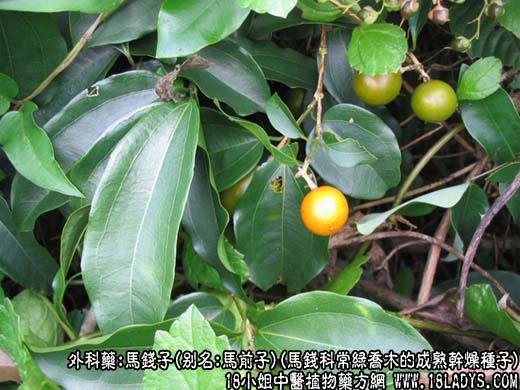
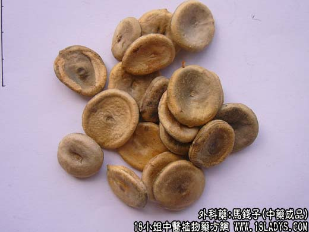
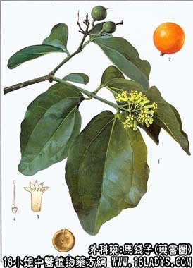

本品为常用中药。始载《本草纲目》，原名“番木鳖”。
别名：马前子、马钱。
来源：为马钱科常绿乔木马钱和同科攀援状木质藤本植物云南马钱的成熟干燥种子。前者为进口，后者为国产。
产地：进口品主产于印度、缅甸、泰国、斯里兰卡、越南、柬埔寨、印尼等地。国产品主产于云南、广东等地。
性状鉴别：本品呈扁圆形，稍扭翘，常一面凹下，另一面凸起，有的一面或两面有一周稍凸的环边。直径1.5～2.5厘米，厚约3～6毫米。表面被极密的灰绿色或黄绿色有光泽的细毛茸，毛茸自中央向四周匐伏生长。种子中心有一突起的种脐，边级上有一突起的珠孔，两者之间有一条棱线。种皮和种仁，甚坚韧，不易破碎。平剖为两瓣，可见青白色肥厚胚乳，珠孔处有二片菲薄的小子叶。气无，味极苦，有毒。国产品和进口品形味基本相同。以个大肥厚，密生灰绿色毛茸者为佳。
主要成分：含有生物硷，包括马钱子硷及番木鳖硷（士的宁）并含微量的番木鳖次硷，伪番木鳖a及b可鲁勃森，此外还有番木鳖甙。
功效与作用：1、兴奋中枢神经系统，增进血液循环和呼吸运动，有轻度升压作用（10～20毫米汞柱），舒张压尤其明显。
2、健胃。为苦味健胃药，增加肠蠕动，增进食欲。
附：其水浸剂对许兰氏黄癣菌等，有不同程度的抑制作用。
炮制：砂烫至微膨胀，取出串碎，去毛，在轧成细粉。（砂烫主要是取其易于粉碎）。
性味：苦、寒、有毒。
归经：如肝、脾经。
功能：祛风定痛，舒筋活络，散血热，消肿毒。
主治：四肢麻木，筋骨拘挛，关节肿痛，跌打损伤，痈疽肿毒等症。
临床应用：1、用于跌打骨折、损伤、扭挫伤、压伤，取其有强壮作用。常配枳壳和其它止痛活血之药，方如跳骨丹，此方能促进骨折愈合，消肿止痛。治跌打腰腿痛常配牛膝、杜仲。
2、用于治咽喉痹痛，取其消炎解毒作用。常配土牛膝等，方如喉痛方。
附：本品因含士的宁，服量过大易致中毒，轻者头晕恶心，重者麻木抽搐。
用量：0.6～1.2g。又据最近研究报道，含马钱子的中成药一次服用剂量，以其所含的士的宁含量控制在6毫克左右比较适宜【新医药学杂志，（6）：38，1973】。
处方举例：跳骨丹（接骨丹）（验方）：马钱子480g，枳壳240g，羌活、独活、北细辛、红花、台乌、朱砂各60g，血竭、乳香、没药、狗脊、土鳖、三七、自然铜、潼蒺藜各120g，黄芪、骨碎补各240g，各研细末，按份量配合备用，成人每次1.2～1.8g，儿童酌减，水冲服，或水洒各半冲服。
注：1、主要成分含番木鳖碱（士的宁）及马钱子碱等，现已经知其有效成分为番木鳖碱，对脊髓神经有强烈的兴奋作用，久服或过量容易中毒，长生惊厥，应注意。又因原生药的产地及采收时间等不同，其含量亦不稳定，相差较大，一般含量约在1.5%～2.1%，个别最高达5%，因而在每批商品进口后，应逐批进行含量测定，作出记录与商品同行，以便广大医药人员掌好用量，使之既有疗效，又不致产生中毒情况。按北京药品生物制品检定所，关于马钱子安全限度的初步研究报导，认为成年人的每次用量控制在6毫克左右是比较适宜的。
2、关于马钱子的炮制方法各地不一，有水煮、砂烫、油炸等多种，据说都是为了减少毒性。现已知番木鳖碱在268～290℃高温时始熔融分解。水煮法温度较低，起不到破坏番木鳖碱的作用，不能降低毒性；油炸性、砂烫法、温度较高，能破坏番大鳖碱，但温度高低不同，因而破坏的程度也不同，含量不准，有时过火则含量太低，起不到治疗疾病的作用。如采用砂烫法应在200～250℃之间，既节约油料，又易于粉碎，便于制药和服用，又不破坏含量，可依据原测定的生药番木鳖碱含量换算服用。